乳 钉 纹
乳 钉 纹
古代常用纹饰之一，是青铜器上极为简单的纹饰之一。纹形为凸起的乳突排成单行或方阵。另有一种图案，乳钉各置于斜方格中，称为“斜方格乳钉纹”、“乳钉雷纹”、“百乳雷纹”。商代晚期至春秋时期是乳钉纹的鼎盛时期，殷周之际，乳钉突出较高，周初有呈柱状形的。乳钉纹主要出现在鼎和簋上，此外，在爵、角、瓶、尊、壶、盒、钟、罍等器物上也有出现。
乳钉纹青铜爵是较早出土的一批青铜爵中的代表，属于二里头文化（约公元前21世纪-前13世纪）后期，为饮酒器，高22.5厘米，宽31.5厘米，现藏洛阳博物馆，腹部一面有凸线两道，两线之间横列五枚乳钉装饰，器壁甚薄。